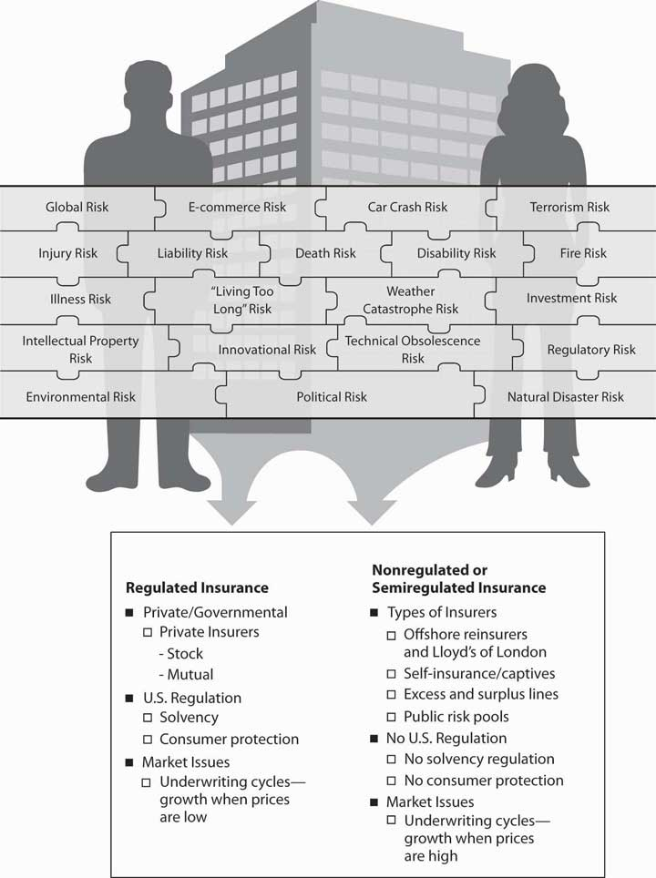
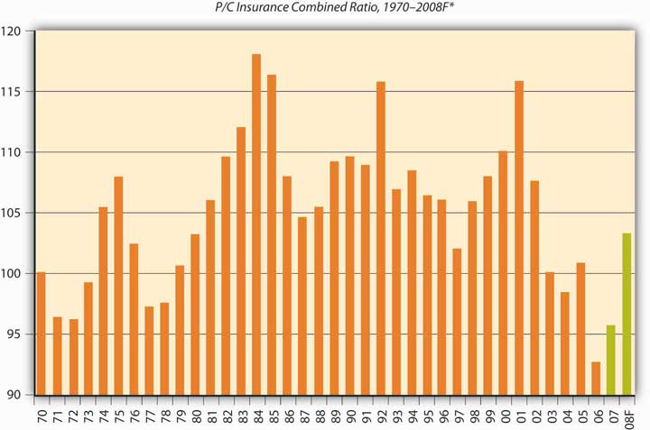
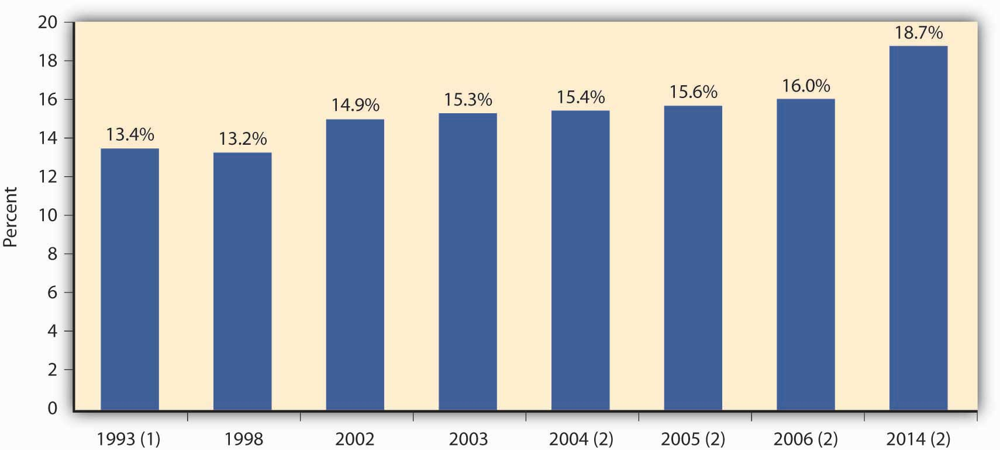

The insurance industry, in fact, is one of the largest global financial industries, helping to propel the global economy. “In 2007, world insurance premium volume, for [property/casualty and life/health] combined, totaled $4.06 trillion, up 10.5 percent from $3.67 trillion in 2006,” according to international reinsurer Swiss Re. The United States led the world in total insurance premiums, as shown in Table 8.1 "Top Ten Countries by Life and Nonlife Direct Premiums Written, 2007 (Millions of U.S.$)*".
Table 8.1 Top Ten Countries by Life and Nonlife Direct Premiums Written, 2007 (Millions of U.S.$)*
| Total Premiums | ||||||
|---|---|---|---|---|---|---|
| Rank | Country | Nonlife PremiumsIncludes accident and health insurance. | Life Premiums | Amount | Percentage Change from Prior Year | Percentage of Total World Premiums |
| 1 | United StatesNonlife premiums include state funds; life premiums include an estimate of group pension business. | $578,357 | $651,311 | $1,229,668 | 4.69% | 30.28% |
| 2 | United Kingdom | 349,740 | 113,946 | 463,686 | 28.16 | 11.42 |
| 3 | JapanApril 1, 2007–March 31, 2008. | 330,651 | 94,182 | 424,832 | −3.31 | 10.46 |
| 4 | France | 186,993 | 81,907 | 268,900 | 7.47 | 6.62 |
| 5 | Germany | 102,419 | 120,407 | 222,825 | 10.09 | 5.49 |
| 6 | Italy | 88,215 | 54,112 | 142,328 | 1.27 | 3.50 |
| 7 | South KoreaApril 1, 2007–March 31, 2008. | 81,298 | 35,692 | 116,990 | 16.28 | 2.88 |
| 8 | The Netherlands | 35,998 | 66,834 | 102,831 | 11.98 | 2.53 |
| 9 | CanadaLife business expressed in net premiums. | 45,593 | 54,805 | 100,398 | 14.74 | 2.47 |
| 10 | PR China | 58,677 | 33,810 | 92,487 | 30.75 | 2.28 |
| * Before reinsurance transactions. | ||||||
Source: Insurance Information Institute (III), accessed March 6, 2009, http://www.iii.org/media/facts/statsbyissue/international/.
The large size of the global insurance markets is demonstrated by the written premiums shown in Table 8.1 "Top Ten Countries by Life and Nonlife Direct Premiums Written, 2007 (Millions of U.S.$)*". The institutions making the market were described in Chapter 6 "The Insurance Solution and Institutions". In this chapter we cover the following:
As we have done in the prior chapters, we begin with connecting the importance of this chapter to the complete picture of holistic risk management. We will become savvy consumers only when we understand the insurance marketplace and the conditions under which insurance institutions operate. When we make the selection of an insurer, we need to understand not only the organizational structure of that insurance firm, but we also need to be able to benefit from the regulatory safety net available to protect us. Also important is our clear understanding of insurance market conditions affecting the products and their pricing. Major rate increases for coverage do not happen in a vacuum. As you saw in Chapter 4 "Evolving Risk Management: Fundamental Tools", past losses are the most important factor in setting rates. Market conditions, availability, and affordability of products are very important factors in the risk management decision, as you saw in Chapter 3 "Risk Attitudes: Expected Utility Theory and Demand for Hedging". In Chapter 2 "Risk Measurement and Metrics", you learned that an insurable risk must have the characteristic of being affordable. Because of underwriting cyclesThe movement of insurance prices through time.—the movement of insurance prices through time (explained next in this chapter)—insurance rates are considered dynamic. In a hard market, when rates are high and insurance capacityThe quantity of coverage that is available in terms of limits of coverage., the quantity of coverage that is available in terms of limits of coverage, is low, we may choose to self-insure. Insurance capacity relates to the level of insurers’ capital (net worth). If capital levels are low, insurers cannot provide a lot of coverage. In a soft market, when insurance capacity is high, we may select to insure for the same level of severity and frequency of losses. So our decisions are truly related to external market conditions, as indicated in Chapter 3 "Risk Attitudes: Expected Utility Theory and Demand for Hedging".
The regulatory oversight of insurers is another important issue in our strategy. If we care to have a safety net of guarantee funds, which act as deposit insurance in case of insolvency of an insurer, we will work with a regulated insurer. In case of insolvency, a portion of the claims will be paid by the guarantee funds. We also need to understand the benefits of selecting a regulated entity as opposed to nonregulated one for other consumer protection actions such as the resolution of complaints. If we are unhappy with our insurer’s claims settlement process and if the insurer is under the state’s regulatory jurisdiction, the regulator in our state may help us resolve disputes.
Figure 8.1 Links between the Holistic Risk Picture and the Big Picture of the Insurance Industry Markets by Regulatory Status
As you can see, understanding insurance institutions, markets, and insurance regulation are critical to our ability to complete the picture of holistic risk management. Figure 8.1 "Links between the Holistic Risk Picture and the Big Picture of the Insurance Industry Markets by Regulatory Status" provides the line of connection between our holistic risk picture (or a business holistic risk) and the big picture of the insurance industry and markets. Figure 8.1 "Links between the Holistic Risk Picture and the Big Picture of the Insurance Industry Markets by Regulatory Status" separates the industry’s institutions into those that are government-regulated and those that are non- or semiregulated. Regardless of regulation, insurers are subject to market conditions and are structured along the same lines as any corporation. However, some insurance structures, such as governmental risk pools or Lloyd’s of London, do have a specialized organizational structure.
In this section we elaborate on the following:
At any point in time, insurance markets (mostly in the property/casualty lines of insurance) may be in hard market or soft market conditions because of the underwriting cycle. Soft marketCondition that occurs when insurance losses are low and prices are very competitive. conditions occur when insurance losses are low and prices are very competitive. Hard marketCondition that occurs when insurance losses are above expectations and reserves no longer are able to cover all losses. conditions occur when insurance losses are above expectations (see loss development in Chapter 7 "Insurance Operations") and reserves are no longer able to cover all losses. Consequently, insurers or reinsurers have to tap into their capital. Under these conditions, capacity (measured by capital level relative to premiums) is lowered and prices escalate. A presentation of the underwriting cycle of the property/casualty insurance industry from 1956 to 2008 is featured in Figure 8.2 "Underwriting Cycles of the U.S. Property/Casualty Insurance Industry, 1970–2008*". The cycle is shown in terms of the industry’s combined ratio, which is a measure of the relationship between premiums taken in and expenditures for claims and expenses. In other words, the combined ratioThe loss ratio (losses divided by premiums) plus the expense ratio (expenses divided by premiums). is the loss ratio (losses divided by premiums) plus the expense ratio (expenses divided by premiums). A combined ratio above one hundred means that, for every premium dollar taken in, more than a dollar was spent on losses and expenses. The ratio does not include income from investments, so a high number does not necessarily mean that a company is unprofitable. Because of investment income, an insurer may be profitable even if the combined ratio is over 100 percent. Each line of business has its own break-even point because each line has a different loss payment time horizon and length of time for the investment of the premiums. The break-even point is determined on the basis of how much investment income is available in each line of insurance. If a line has a longer tail of losses, there is a longer period of time for investment to accumulate.
Figure 8.2 Underwriting Cycles of the U.S. Property/Casualty Insurance Industry, 1970–2008*
* Peaks are hard markets; valleys are soft markets.
† A.M. Best year-end estimate of 103.2; actual nine-month result was 105.6.
Source: Insurance Information Institute, 2009; A.M. Best; ISO, III
As you can see in Figure 8.2 "Underwriting Cycles of the U.S. Property/Casualty Insurance Industry, 1970–2008*", the ups and downs are clearly visible across the whole industry for all lines of business. When the combined ratio is low, the industry lowers its underwriting standards in order to obtain more cash that can be invested—a strategy known as cash flow underwritingStrategy pursued when the combined ratio is low, in which the industry lowers its underwriting standards in order to obtain more cash that can be invested.. The industry is regarded as competing itself to the ground, and underwriting standards are loose. The last soft market lasted about fifteen years, ending in the late 1990s. From 1986 to 1999, the combined ratio stayed in the range of 101.6 in 1997 to 109.6 in 1990, with only one jump in 1992 to a combined ratio of 115.7. Because the break-even point of the industry combined ratio is 107, the industry was doing rather well during that long period. It caused new decision makers (those without experience in underwriting cycles) to be less careful. In addition, computerized pricing models gave a false sense of security in making risk-selection and pricing decisions. Actual losses ended up causing rate increases, and the soft market changed into a true hard market.
During the 1990s, the soft market conditions lasted longer than usual because the industry had large capacity. There were speculations that the introduction of capital markets as an alternative to reinsurance (see Chapter 3 "Risk Attitudes: Expected Utility Theory and Demand for Hedging") kept rates down. In April 2005, the Insurance Information Institute reported that the 2004 statutory rate of return on average surplus was 10.5 percent, up from 9.5 percent for calendar year 2003, 1.1 percent for 2002, and −2.3 percent for 2001 (one of the worst years ever). The 2004 recovery is the most remarkable underwriting recovery in modern history, with insurers slicing 17.6 points off the combined ratio in just three years. Additional improvement is shown in 2006, a year after Hurricane Katrina.
For each line of insurance, there is a level of combined ratio that determines whether the line is profitable or not. The level of combined ratio that is required for each line of business to avoid losing money is called the break-even combined ratio levelThe level of combined ratio that is required for each line of business to not lose money.. Depending on the investment income contribution of each line of insurance, the longer tail lines (such as general liability and medical malpractice) have a much larger break-even level. Fire and allied lines as well as homeowner’s have the lowest break-even combined ratio levels because the level of investment income is expected to be lower. Thus, if the actual combined ratio for homeowner’s is 106, the industry is experiencing negative results. The break-even for all lines of the industry is 107. If the industry’s combined ratio is 103, the industry is reaping a profit. The largest break-even combined ratio is for the medical malpractice line, which is at 115; for general and product liability lines, it is 113; and for worker’s compensation, it is 112. The lowest break-even combined ratio is 103 for homeowner’s and 105 for personal auto.
The soft market climate of 2005 helped the industry recover from the devastation of hurricanes Katrina, Rita, and Wilma. Some even regard the impact of these major catastrophes as a small blip in the underwriting results for the property/casualty industry, except for the reinsurers’ combined ratio. Table 8.2 "The Ten Most Costly Catastrophes in the United States*" shows the adjusted amounts of loss for these catastrophes. Despite the high magnitude of these losses, market analysts projected a stable outlook for the property/casualty industry in 2006. In fact, the actual combined ratio for that year was the lowest observed in decades, at 92.6, as indicated in Figure 8.2 "Underwriting Cycles of the U.S. Property/Casualty Insurance Industry, 1970–2008*".
Table 8.2 The Ten Most Costly Catastrophes in the United States*
| Insured Loss (Millions of $) | ||||
|---|---|---|---|---|
| Rank | Date | Peril | Dollars when Occurred | In 2008 DollarsAdjusted to 2008 dollars by the Insurance Information Institute. |
| 1 | Aug. 2005 | Hurricane Katrina | $41,100 | $45,309 |
| 2 | Aug. 1992 | Hurricane Andrew | 15,500 | 23,786 |
| 3 | Sept. 2001 | World Trade Center and Pentagon terrorist attacks | 18,779 | 22,830 |
| 4 | Jan. 1994 | Northridge, CA, earthquake | 12,500 | 18,160 |
| 5 | Oct. 2005 | Hurricane Wilma | 10,300 | 11,355 |
| 6 | Sept. 2008 | Hurricane Ike | 10,655Estimated. | 10,655“Weiss: Life Profits Jump 42 Percent,” National Underwriter, Life & Health/Financial Services Edition, March 15, 2005. |
| 7 | Aug. 2004 | Hurricane Charley | 7,475 | 8,520 |
| 8 | Sept. 2004 | Hurricane Ivan | 7,110 | 8,104 |
| 9 | Sept. 1989 | Hurricane Hugo | 4,195 | 7,284 |
| 10 | Sept. 2005 | Hurricane Rita | 5,627 | 6,203 |
| * Property coverage only. Does not include flood damage covered by the federally administered National Flood Insurance Program. | ||||
Source: Insurance Information Institute (III). Accessed March 6, 2009. http://www.iii.org/media/hottopics/insurance/catastrophes/.
In addition to the regular underwriting cycles, external market conditions affect the industry to a great extent. The 2008–2009 financial crisis impact on the property/casualty insurance industry is discussed in the box below.
There’s a fair chance that your bank has changed names—perhaps more than once—within the past twelve months. A year from now, it may do so again. While your liquid assets may be insured through the Federal Deposit Insurance Corporation (FDIC), it is understandable that such unpredictability makes you nervous. Quite possibly, you have suffered personally in the economic recession as well. You may have lost your job, watched investments erode, or even experienced home foreclosure. Investment banks, major retailers, manufacturers, and firms across many industries, large and small, have declared bankruptcy, turned to government subsidy, or collapsed altogether. In light of the bleak realities of the recession, you have no doubt reexamined the things in your life you have come to depend on for security. The question is raised, Should you also worry about the risks you are insured against? Should you worry about your insurance company? The outlook is more optimistic than you may think. Chances are, the home, auto, or commercial property insurer you are with today is the insure you will be with tomorrow (should you so desire).
It is now known that the 2008–2009 economic recession began in December of 2007. It is the longest recession the United States has experienced since 1981; should it extend beyond April 2009, it will be the longest recession in United States history since the Great Depression. At the time of writing, 3.6 million jobs have been lost during the course of the recession, leaving 12.5 million U.S. workers unemployed. The Bureau of Labor Statistics reported an unemployment rate of 8.1 percent in February of 2009, the highest since November of 1982. It is anticipated that unemployment will peak at 9 percent by the end of 2009. The Dow Jones industrial average lost 18 percent of its value and the S&P 500 declined by 20 percent as a result of the October 2008 market crash. In 2007, 1.3 million U.S. properties faced foreclosure, up a staggering 79 percent from 2006. This was just the tip of the iceberg, however, with foreclosures increasing by 81 percent in 2008, amounting to 2.3 million properties. Conditions like these have been damaging to homeowners and organizations alike. Firms that were weak going into the crisis have been decimated, while even resilient companies have seen profits and net worth shrink. With people out of jobs and homes, discretionary spending has contracted considerably. The effects on property and casualty insurers, though, have been less direct.
The property/casualty segment has been hurt by problems in the stock market, real estate, and auto industry primarily. Underwriting alone rarely produces an industry profit; investments account for most of the industry’s positive returns. With stocks hit hard by the recession, even the conservative investments typically made by property/casualty insurers have posted poor returns. New home starts dropped 34 percent from 2005–2007, a net decline of 1.4 million units. To insurers, this represents revenues foregone in the form of premiums that could be collected on new business, potentially amounting to $1.2 billion. Auto and light trucks are projected to have the worst unit sales in 2009 since the late 1960s with a reduction of 6 million units. The effect of poor performance in underlying businesses is less pronounced on auto insurers than on home insurers but still substantial. Workers’ compensation insurers (to be discussed in Chapter 16 "Risks Related to the Job: Workers’ Compensation and Unemployment Compensation") have seen their exposure base reduced by the high unemployment rate.
Nonetheless, the industry attributes recent financial results more to basic market conditions than the economic recession. The combination of a soft market (recall the discussion in Chapter 8 "Insurance Markets and Regulation") and high catastrophe experience meant a reduction in profits and slow growth. Property/casualty industry profits were 5.4 billion in 2008, down considerably from 61.9 billion in 2007. The 2007 performance, however, was down slightly from an all-time record industry profit in 2006. The 2008 drop is less noteworthy in the wider context of historical annual profits, which are highly correlated with the fluctuating market cycles. Despite the dire economic condition, two important points are made clear: the insurance industry, on the whole, is operating normally and continues to perform the basic function of risk transfer. Insurers are able to pay claims, secure new and renewal business, and expand product offerings. The problems at American International Group (AIG) (discussed in Chapter 7 "Insurance Operations") have been the exception to the rule. Low borrowing, conservative investments, and extensive regulatory oversight have also aided insurance companies in avoiding the large-scale problems of the crisis. All of these factors were inverted in the case of the imperiled banks and other financial institutions. Consider the following: between January 2008 and the time of this writing, forty-one bank failures were observed. This is in comparison to zero property/casualty insurer failures.
The $787 billion stimulus package authorized by the American Recovery and Reinvestment Act of 2009 is further expected to help matters. The program aims to save or create 3.5 million jobs. Of the stimulus, 24.1 percent of funding is intended for spending on infrastructure, 37.9 percent on direct aid, and 38 percent on tax cuts. Insurers will see no direct injection of capital and virtually no indirect benefits from the latter two components of the stimulus package. As it relates to infrastructure spending, however, workers’ compensation insurers will be helped by the boost in employment. Considerable outlays on construction projects will also increase demand for commercial property insurance. Renewed investor confidence in the stock market would also enhance investment returns considerably. Just as insurers are indirectly harmed by the crisis, so too will they indirectly benefit from recovery efforts.
Of course, the success of the stimulus plan remains unproven, so the insurance industry must prepare for the uncertain future. In the current economic climate, investments cannot be relied upon as the major driver of industry profitability that they once were. This calls for even greater discipline in underwriting in order for companies to remain solvent. With the federal government taking an unusually active role in correcting deficiencies in the market, a new wave of regulation is inevitable. New compliance initiatives will be introduced, and existing protections may be stripped away. Still, the insurance industry may be uniquely equipped to cope with these challenges, as exemplified by the fundamental nature of their business: risk management. By practicing what they preach, insurers can be rewarded with insulation from the most detrimental effects of the recession and emerge as role models for their fellow financial institutions.
Sources: Dr. Robert P. Hartwig, “Financial Crisis, Economic Stimulus & the Future of the P/C Insurance Industry: Trends, Challenges & Opportunities,” March 5, 2009, accessed March 9, 2009, http://www.iii.org/media/presentations/sanantonio/; United States Department of Labor, Bureau of Labor Statistics, “The Unemployment Situation: February 2009,” USDL 09-0224, March 6, 2009, accessed March 9, 2009, http://www.bls.gov/news.release/archives/empsit_03062009.pdf; “U.S. FORECLOSURE ACTIVITY INCREASES 75 PERCENT IN 2007,” RealtyTrac, January 9, 2008, accessed March 9, 2009, http://www.realtytrac.com/ContentManagement/pressrelease.aspx?ChannelID=9&ItemID= 3988&accnt=64847; Mark Huffman, “2008 Foreclosure Activity Jumps 81 Percent,” ConsumerAffairs.com, January 15, 2009, accessed March 9, 2009, http://www.consumeraffairs.com/news04/2009/01/foreclosure_jumps.html.
The life and health insurance markets do not show similar underwriting cycles. As you saw in Chapter 7 "Insurance Operations", the investment activity of the life/health industry is different from that of the property/casualty segment. In recent years, focus has shifted from traditional life insurance to underwriting of annuities (explained in Chapter 21 "Employment-Based and Individual Longevity Risk Management"). Net premiums for life/health insurers increased by 5.7 percent to $616.7 billion and investment income increased by 4.9 percent to $168.2 billion in 2007.Insurance Information Institute (III), Insurance Fact Book 2009, 19. However, in recent years, many life insurance companies have invested in mortgage-backed securities with impact on their capital structure, as detailed in “Problem Investments and the Credit Crisis” of Chapter 7 "Insurance Operations". These investments and the effects of the recession brought about a host of problems for the life/health industry in 2008 that have continued into 2009. You will read about such issues in “The Life/Health Industry in the Economic Recession of 2008–2009” of Chapter 19 "Mortality Risk Management: Individual Life Insurance and Group Life Insurance". As of writing this chapter, the Wall Street Journal reported (on March 12, 2009) that life insurers “are being dragged down by tumbling markets and hope a government lifeline is imminent.”Scott Patterson and Leslie Scism, “The Next Big Bailout Decision: Insurers,” Wall Street Journal, March 12, 2009, A1.
Health insurance consists of coverage for medical expenses, disability, and long-term care (all covered in Chapter 22 "Employment and Individual Health Risk Management"). Figure 8.3 "National Health Expenditures Share of Gross Domestic Product, 1993–2014" shows how health insurance expenditures increased as a percentage of the gross domestic product in 2006 to 16 percent. Expenditures are projected to increase to 18.7 percent in 2014. In 2007, total health insurance premiums amounted to $493 billion.Insurance Information Institute (III), Insurance Fact Book 2009, 23. As with life insurance, emphasis on product offerings in the health segment has seen a transition over time in response to the changing consumer attitudes and needs. The year 1993 marks the beginning of the shift into managed care plans, the features of which are again discussed in Chapter 22 "Employment and Individual Health Risk Management".
Despite the managed-care revolution of the 1990s, health care costs continued to increase with no relief in sight.Ron Panko, “Healthy Selection: Less Than a Decade After the Managed-Care Revolution Began in Earnest, New Styles of Health Plans Are on the Market. Proponents See Them As the Next Major Trend in Health Insurance,” Best’s Review, June 2002. The role of health insurers in influencing insureds’ decisions regarding medical treatment has been a topic of controversy for many years in the United States. Some Americans avoid seeking medical care due to the high health care costs and their inability to afford insurance. These and other issues have motivated health insurance reform efforts, the most recent of which have originated with new President Barack Obama. For an in-depth discussion, see “What is the Tradeoff between Health Care Costs and Benefits?” in Chapter 22 "Employment and Individual Health Risk Management".
Figure 8.3 National Health Expenditures Share of Gross Domestic Product, 1993–2014
(1) Marks the beginning of the shift to managed care.
(2) Projected.
Source: Insurance Information Institute per the Centers for Medicare and Medicaid Services, Office of the Actuary; U.S. Department of Commerce, Bureau of Economic Analysis and Bureau of the Census.
Reinsurers, by the nature of their business, suffer to a greater extent when catastrophes hit. This fact requires better understanding of not only the reinsurance operations described in Chapter 7 "Insurance Operations" but also the global reinsurance markets and their players.
The top ten reinsurance companies by gross premiums written for 2007 are provided in Table 8.3 "Top Ten Global Reinsurance Companies by Gross Premiums Written, 2007". Reinsurance is an international business out of necessity. The worldwide growth of jumbo exposures, such as fleets of wide-bodied jets, supertankers, and offshore drilling platforms, creates the potential for hundreds of millions of dollars in losses from one event. No single insurer wants this kind of loss to its income statement and balance sheet. One mechanism for spreading these mammoth risks among insurers is the international reinsurance market.
As you can see in Table 8.3 "Top Ten Global Reinsurance Companies by Gross Premiums Written, 2007", most of the largest reinsurers are based in Europe. The last two in the list are in Bermuda, an emerging growth market for reinsurance. The Bermuda insurance industry held $146 billion in total assets in 2000, according to the Bermuda Registrar of Companies. Insurers flock to Bermuda because it is a tax haven with no taxes on income, withholding, capital gains, premiums, or profits. It also has a friendly regulatory environment, industry talent, and many other reinsurers. After September 11, a new wave of reinsurers started in Bermuda as existing reinsurers lost their capacity. These reinsurers have since suffered substantial losses as a result of the catastrophic hurricanes of 2004 and 2005.David Hilgen, “Bermuda Bound—Bermuda: Insurance Oasis in the Atlantic,” and “Bermuda Bound—The New Bermudians,” Best’s Review, March 2002.
Table 8.3 Top Ten Global Reinsurance Companies by Gross Premiums Written, 2007
| Company | Country | Net Reinsurance Premiums Written (Millions of $) |
|---|---|---|
| Munich Re Co. | Germany | $30,292.9 |
| Swiss Re Co. | Switzerland | 27,706.6 |
| Berkshire Hathaway Re | United States | 17,398.0 |
| Hannover Rueckversicherung AG | Germany | 10,630.0 |
| Lloyd’s | United Kingdom | 8,362.9 |
| SCOR SE | France | 7,871.7 |
| Reinsurance Group of America, Inc. | United States | 4,906.5 |
| Transatlantic Holdings, Inc. | United States | 3,952.9 |
| Everest Reinsurance Co. | Bermuda | 3,919.4 |
| PartnerRe Ltd. | Bermuda | 3,757.1 |
Source: Insurance Information Institute (III). The Insurance Fact Book 2009, p 42.
In this section you studied the following:
In this section we elaborate on the following:
Insurance delivers only future payment in case of a loss. Therefore, it has long been actively regulated. The nature of the product requires strong regulation to ensure the solvency of insurers when claims are filed. This is the big picture of the regulation of insurance in a nutshell. However, within this important overall objective are many areas and issues that are regulated as interim steps to achieve the main objective of the availability of funds to pay claims. Most of the regulation has been at the state level for many years. The possibility of federal involvement has also been raised, especially since the passage of the Gramm-Leach-Bliley Financial Services Modernization Act (GLBA) in 1999 and subsequent activities like the optional federal charter of insurers (discussed in the box Note 8.36 "The State of State Insurance Regulation—A Continued Debate"). In August 2004, Representative Michael Oxley, chairperson of the House Financial Services Committee, and Representative Richard Baker, chairperson of the Subcommittee on Capital Markets, Insurance, and Government Sponsored Enterprises, released a draft of the State Modernization and Regulatory Transparency (SMART) Act. This proposal is also regarded as the insurance regulatory reform road map draft, and it has added fuel to the debate of state versus federal insurance regulation. The debate has taken many shapes, including a dual (federal/state) chartering system, similar to the banking industry’s dual regulatory system that would allow companies to choose between the state system and a national regulatory structure.
Under the current state insurance regulation scheme, state legislatures pass insurance laws that form the basis for insurance regulation. Common forms of insurance regulatory laws are listed in Table 8.4 "Common Types of Insurance Regulatory Laws". To ensure the smooth operation of insurance markets and the solvency of insurers, insurance laws are concerned not only with the operations and investments of insurers but also with licensing requirements for insurers, agents, brokers, and claims adjusters and with rates and policy forms and consumer protection. The laws provide standards of financial solvency, including methods of establishing reserves and the types of investments permitted. Provisions are made in the states’ laws for the liquidation or rehabilitation of any insurance company in severe financial difficulty. Because solvency is considered to be affected by product pricing (setting rates), rate regulation is an important part of insurance regulation. Trade practices, including marketing and claims adjustment, are also part of the law. Legislation also creates methods to make certain types of insurance readily available at affordable (that is, subsidized) prices. In addition, the taxation of insurers at the state level is spelled out in the insurance code for each state.
Table 8.4 Common Types of Insurance Regulatory Laws
|
Every state has an insurance department to administer insurance laws; it is known as the commissioner (or superintendent) of insuranceState insurance department that administers insurance laws.. In some states, the commissioner of insurance also acts as another official of the state government, such as state treasurer, state auditor, or director of banking. In most states, however, acting as commissioner of insurance is the person’s sole responsibility. In some states, the commissioner is appointed; in others, he or she is elected. Most insurance departments have relatively few staff employees, but several are large, such as those in Texas, California, Illinois, Florida, and New York. The small departments are generally not equipped to provide effective regulation of such a powerful industry.
As indicated above, the most important part of regulation is to ensure solvency of insurers. Assisting in this objective are the regulatory efforts in the area of consumer protection in terms of rates and policy forms. Of course, regulators protect insureds from fraud, unscrupulous agents, and white-collar crime. Regulators also make efforts to make coverage available at affordable prices while safeguarding the solvency of insurers. Regulation is a balancing act and it is not an easy one. Because insurance is regulated by the states, lack of uniformity in the laws and regulation is of great concern. Therefore, the National Association of Insurance Commissioners (NAIC)A group that deals with the creation of model laws for adoption by the states to encourage uniformity. deals with the creation of model laws for adoption by the states to encourage uniformity. Despite the major effort to create uniformity, interest groups in each state are able to modify the NAIC model laws, so those that are finally adopted may not be uniform across the states. The resulting maze of regulations is considered a barrier to the entry of new insurers. This is an introductory text, so insurance regulation will be discussed only briefly here. For the interested student, the NAIC Web site (http://www.naic.org) is a great place to explore the current status of insurance regulation. Each state’s insurance department has its own Web site as well.
The state insurance commissioner is empowered to do the following:
An insurer must have a license from each state in which it conducts business. This requirement is for the purpose of exercising control. Companies chartered in a state are known as domestic insurersA group that deals with the creation of model laws for adoption by the states to encourage uniformity.. Foreign insurers are those formed in another state; alien insurersInsurance companies organized in another country. are those organized in another country. The commissioner has more control over domestic companies than over foreign and alien ones (he or she has generally less control over insurers not licensed in the state).
An insurer obtains licenses in its state of domicile and each additional state where it plans to conduct insurance business. Holding a license implies that the insurer meets specified regulatory requirements designed to protect the consumer. It also implies that the insurer has greater business opportunities than nonlicensed insurers. A foreign insurer can conduct business by direct mail in a state without a license from that state. The insurer is considered nonadmitted and is not subject to regulation. Nonadmitted or nonlicensed insurers are also called excess and surplus lines insurersCompanies that provide coverages that are not available from licensed insurers.. They provide coverage that is not available from licensed insurers. That is, nonlicensed insurers are permitted to sell insurance only if no licensed company is willing to provide the coverage. Persons who hold special “licenses” as surplus lines agents or brokersPersons who hold special licenses to provide access to nonadmitted insurers. provide access to nonadmitted insurers.
A license may be denied under certain circumstances. If the management is incompetent or unethical, or lacking in managerial skill, the insurance commissioner is prohibited from issuing a license. Because unscrupulous financiers have found insurers fruitful prospects for stock manipulation and the milking of assets, some state laws prohibit the licensing of any company that has been in any way associated with a person whose business activities the insurance commissioner believes are characterized by bad faith. For example, the Equity Funding case, in which millions of dollars in fictitious life insurance were created and sold to reinsurers, shows how an insurer can be a vehicle for fraud on a gigantic scale.Raymond Dirks and Leonard Gross, The Great Wall Street Scandal (New York: McGraw-Hill Book Company, 1974). A more recent example is the story of Martin Frankel, who embezzled more than $200 million in the 1990s from small insurance companies in Arkansas, Mississippi, Missouri, Oklahoma, and Tennessee. Three insurance executives in Arkansas were charged in connection with the case.“Three Executives Charged in Frankel Case,” Best’s Review, February 2002.
To qualify for a license, an insurer must fulfill certain financial requirements. Stock insurers must have a specified amount of capital and surplus (that is, net worth), and mutual insurers must have a minimum amount of surplus (mutual companies, in which the policyholders are the owners, have no stock and therefore do not show “capital” on their balance sheets). The amounts depend on the line of insurance and the state law. Typically, a multiple-line insurer must have more capital (and/or surplus) than a company offering only one line of insurance.The theory behind this requirement is that a company offering all lines of insurance may have greater variations of experience than a company engaged in only one or a few lines and therefore should have a greater cushion of protection for policyholders. It seems reasonable to believe, however, that the opposite may be the case; bad experience in one line may be offset by good experience in another line. Insurers must also maintain certain levels of capital and surplus to hold their license. Historically, these requirements have been set in simple dollar values. During the 1990s, requirements for risk-based capital were implemented by the states.
Insurance companies are required to submit uniform financial statements to the regulators. These statements are based on statutory accounting as opposed to the generally accepted accounting (GAP)The acceptable system of accounting for publicly traded firms. system, which is the acceptable system of accounting for publicly traded firms. Statutory accounting (SAP)System of reporting of insurance that allows companies to account differently for accrued losses. is the system of reporting of insurance that allows companies to account differently for accrued losses. The NAIC working groups modify the financial reporting requirements often. In 2002, in the wake of a series of corporate financial scandals, including those affecting Enron, Arthur Andersen, and WorldCom, the Sarbanes-Oxley (SOX) Act of 2002 was adopted. It is considered to be the most significant change to federal securities law in the United States in recent history. It mandates that companies implement improved internal controls and adds criminal and civil penalties for securities violations. SOX calls for auditor independence and increased disclosure regarding executive compensation, insider trading, and financial statements. This act has been successful at improving corporate governance.Andrew Balls, “Greenspan Praises Corporate Governance Law,” Financial Times, May 16, 2005, http://www.ft.com/cms/s/0/e7dc1c70-c568-11d9-87fd-00000e2511c8.html?nclick_check=1 (accessed March 6, 2009). Publicly traded stock insurance companies (as explained in Chapter 6 "The Insurance Solution and Institutions") are required to comply with SOX. As a fallout of accounting problems at AIG in 2005, there have been proposals to amend the NAIC’s model audit rule to require large mutual insurers and other insurers not currently under the act to comply as well. In addition, the issues uncovered in the investigation of AIG’s finite reinsurance transactions led to consideration of new rules for such nontraditional insurance products.Jim Connolly, “AIG Mess Spurring Move to Tighten Insurer Rules,” National Underwriter Online News Service, May 17, 2005, http://www.propertyandcasualtyinsurancenews.com/cms/NUPC/Breaking%20News/2005/05/16-CONNOLLY-jc?searchfor=AIG%20Mess%20Spurring%20Move %20to%20Tighten%20Insurer%20Rules (accessed March 6, 2009). The rules will require inclusion of some level of risk transfer in such transactions to counter accounting gimmicks that served only to improve the bottom line of a firm. As the student can see, new laws and regulations emerge in the wake of improper actions by businesses. Better transparency benefits all stakeholders in the market, including policyholders.
Regulating insurers is most important in the area of safeguarding future payment of losses. Solvency regulation may help but, in spite of the best efforts of insurance executives and regulators, some insurers fail. When an insurer becomes insolvent, it may be placed either in rehabilitation or liquidation. In either case, policyholders who have claims against the company for losses covered by their policies or for a refund of unearned premiumsPremiums collected in advance of the policy period.—premiums collected in advance of the policy period—may have to wait a long time while the wheels of legal processes turn. Even after a long wait, insurer assets may cover only a fraction of the amount owed to policyowners. In the aggregate, this problem is not large; only about 1 percent of insurers become insolvent each year.
The solvency of an insurer depends partly on the amount and quality of its assets, and how the assets’ liquidity matches the needs of liquidity to pay losses. Because poor investment policy caused the failure of many companies in the past, investments are carefully regulated. The states’ insurance codes spell out in considerable detail which investments are permitted and which are prohibited. Life insurers have more stringent investment regulations than property/casualty insurers because some of the contracts made by life insurers cover a longer period of time, even a lifetime or more.
For solvency regulation, the states’ insurance departments and the NAIC are looking into the investment and reserving of insurers. During the 1990s, requirements for risk-based capital were implemented by the states. Remember that capital reflects the excess value a firm holds in assets over liabilities. It represents a financial cushion against hard times. Risk-based capitalAssets, such as equities held as investments, with values that may vary widely over time. describes assets, such as equities held as investments, with values that may vary widely over time; that is, they involve more risk than do certain other assets. To account for variations in risks among different assets, commissioners of insurance, through their state legislators, have begun requiring firms to hold capital sufficient to produce a level that is acceptable relative to the risk profile of the asset mix of the insurer.See the discussion of risk-based capital laws at http://www.naic.org. The requirement and formulas are continuously changing as the NAIC continues to study the changing environment. The basic formula prior to 1996, the Life RBC formula, comprised four components related to different categories of risk: asset risk (C-1), insurance risk (C-2), interest rate risk (C-3), and business risk (C-4). Each of the four categories of risk is a dollar figure representing a minimum amount of capital required to cover the corresponding risk. The final formula is the following:RBC Authorized Capital = (C − 4) + Square Root of [(C − 1 + C − 3)2 + (C − 2)2]. The requirements are a very important part of solvency regulation. The NAIC and many states also established an early warning system to detect potential insolvencies. Detection of potential insolvencies is a fruitful area of research. The interested student is invited to read the Journal of Insurance Regulation and The Journal of Risk and Insurance for articles in this area.For some examples, see Etti G. Baranoff, Tom Sager, and Tom Shively, “Semiparametric Modeling as a Managerial Tool for Solvency,” Journal of Risk and Insurance, September 2000; and Etti G. Baranoff, Tom Sager, and Bob Witt, “Industry Segmentation and Predictor Motifs for Solvency Analysis of the Life/Health Insurance Industry,” Journal of Risk and Insurance, March 1999.
The investment requirements discussed above concern the nature and quality of insurer assets. The value of assets an insurer must hold is influenced by capital and surplus requirements and the regulation of reserves. Reserves are insurer liabilities that represent future financial obligations to policyholders. Reserves constitute the bulk of insurance company liabilities. See more about how to calculate reserves in Chapter 7 "Insurance Operations".
All states have state guaranty fund associations for both property/casualty and life/health insurance. State guaranty fund associationsSecurity deposit pools made up of involuntary contributions from state-regulated insurance companies to assure that insureds do not bear the entire burden of losses when an insurer becomes insolvent. are security deposit pools made up of involuntary contributions from solvent, state-regulated insurance companies doing business in their respective states to ensure that insureds do not bear the entire burden of losses when an insurer becomes insolvent. The guaranty association assesses each company on the basis of the percentage of its premium volume to cover the obligations to policyholders, as discussed later in this chapter.New York is the only state that funds the guaranty fund prior to losses from insolvent insurers. Most guaranty associations limit the maximum they will reimburse any single insured, and most also provide coverage only to residents of the state.
The state insurance commissioners have extensive power in approving policy forms and controlling the rates for insurance. Policy form and rate regulation is part of the regulatory activity, and it is a topic for open debate. Most states consider property/casualty rates not adequately regulated by market forces. Therefore, rates are regulated for auto, property, and liability coverages and workers’ compensation. Minimum rates for individual life insurance and annuity contracts are regulated indirectly through limits imposed on assumptions used in establishing reserves. Competitive forces are the only determinants of maximum rates for individual life, individual annuity, and group life/health insurance. Rates for individual health insurance are regulated in some states. Individual disability and accident rates are controlled in some states by their refusal to approve policy forms in which at least a target level of premiums is not expected to be returned to the policyholder as benefits.
One type of property/casualty rate regulation is the prior approval approach. In states that use the prior approvalMethod of regulation in which an insurer or its rating bureau must file its new rates and have them approved by the commissioner before using them. method, an insurer or its rating bureau (such as the Insurance Services Office [ISO] discussed earlier) must file its new rates and have them approved by the commissioner before using them. Another approach called file-and-useMethod of regulation that allows an insurer to begin using a new rate as soon as it is filed with the commissioner. allows an insurer to begin using a new rate as soon as it is filed with the commissioner. The commissioner can disapprove the new rate if it is determined to be undesirable within a specified period, generally thirty days. A few states have adopted open competition rating laws. Open competitionMethod of regulation that requires no rate filings by an insurer, as the underlying assumption is that market competition is a sufficient regulator of rates. requires no rate filings by an insurer because the underlying assumption is that market competition is a sufficient regulator of rates. Although results are mixed, studies of the effects of different types of rate regulation generally find no significant differences in the prices paid by consumers under different systems for the same service.
Insurance laws also prohibit certain activities on the part of agents and brokers, such as twisting, rebating, unfair practices, and misappropriation of funds belonging to insurers or insureds. TwistingInducing a policyholder to cancel one contract and buy another by misrepresenting the facts or providing incomplete policy comparisons. (also called churning) is inducing a policyholder to cancel one contract and buy another by misrepresenting the facts or providing incomplete policy comparisons. An unfair or misleading comparison of two contracts can be a disservice if it causes the insured to drop a policy he or she had for some time in order to buy another that is no better, or perhaps not as good. On the other hand, sometimes changing policies is in the best interest of the policyholder, and justified replacements are legal. Twisting regulations, therefore, may include the requirement that the resulting policy change be beneficial to the policyholder.
RebatingProviding substantial value as an inducement to purchase insurance. is providing (substantial) value as an inducement to purchase insurance; for example, the agent or broker shares his or her commission with the insured. Rebating is prohibited because:
Some insurers adjust to rebating laws by offering their agents and brokers two or more series of contracts with the same provisions but with rates that reflect different levels of commissions. A particular insurer’s “personal series,” for example, may include a normal level of commissions. Its “executive series,” however, may pay the agent or broker a lower commission and offer a lower rate to potential insureds. In competitive situations, the agent or broker is likely to propose the “executive series” in order to gain a price advantage. The Florida Supreme Court decided in 1986 that the antirebate law was unconstitutional. This decision had the potential to increase pressure on other states to reconsider the practice, but very little activity on the subject has occurred since then. California’s Proposition 103 (passed in 1988), however, includes a provision to abandon the state’s antirebate laws. In the settlement to resolve their Proposition 103 rollback obligations with the California state insurance department, insurers paid rebates to their 1989 customers.“Four More California Insurers Settle on Prop. 103 Rebates,” National Underwriter, Property & Casualty/Risk & Benefits Management Edition, March 18, 1996. The article explains, “Prop. 103 rebates are determined by applying a formula contained in administrative regulation RH-291 into which a company’s verifiable financial data is inserted. The purpose of the regulations is to determine rebate amounts so as not to conflict with the California Supreme Court’s ruling in Calfarm v. Deukmejian that rebates may not deprive an insurer of a fair rate of return. After the California Supreme Court upheld the regulations in 1994, insurance companies appealed to the U.S. Supreme Court, which in February 1995 refused to review the case. Commissioner Quackenbush re-adopted the regulations in March, 1995.”
At the end of 2004, the NAIC adopted a fee disclosure amendment to the producer licensing model act in order to enhance the transparency of producer-fee arrangements. These changes were in response to the probe of broker activities by the New York State Attorney General’s Office (mentioned in Chapter 7 "Insurance Operations"), which resulted in civil action against Marsh & McLennan. The firm was accused of rigging bids and taking incentive payments to steer business to insurers who were part of the conspiracy. Since the passage of the amendment, the top three insurance brokers have settled with their state regulators and agreed to stop the practice of collecting contingency fees. Most insurance and business newspapers reported extensively about the creation of an $850 million restitution fund for policyholders by Marsh & McLennan as part of the settlement. Many brokers changed their business models as well.Steven Brostoff, “Hearing Bares Insurers’ Charter Split,” National Underwriter Online News Service, June 12, 2002. For example, Willis Group Holdings Ltd. abolished profit-based contingency fees and offered complete disclosure of all compensation earned from underwriters for all activities relating to placing the business. It also introduced a client bill of rights laying out its responsibilities as a client advocate and established internal controls.
Unfair practiceA catch-all term that can be applied to many undesirable activities of agents, claim adjusters, and insurers. is a catch-all term that can be applied to many undesirable activities of agents, claims adjusters, and insurers (including misleading advertisements). Unfair practices may lead to fines, removal of licenses, and—in extreme cases—to punitive damage awards by the courts. Misappropriation of fundsSituations in which the agent keeps funds belonging to the company, the policyholder, or a beneficiary. refers to situations in which the agent keeps funds (primarily premiums) belonging to the company, the policyholder, or a beneficiary. For example, suppose an insured was killed by accident; his $1,000 life insurance policy had a double indemnity rider. In order to impress the beneficiary with the value of this rider, the insurer mailed two checks in the amount of $1,000 each to the agent for delivery. The agent gave one check to the beneficiary and then induced the beneficiary to endorse the second check to the agent, claiming that its issuance was in error, so it had to be cashed and the money returned to the insurer. The insurance department recovered the $1,000, paid it to the beneficiary, and revoked the agent’s license.
Every insured has contact with an insurer’s marketing system, most often through an agent. Regulation of agents, therefore, has a significant impact on most insureds. Only those who make claims on their policies, however, have contact with claims adjusters. This is the time when an insured may be vulnerable and in need of regulatory attention.
Insurance commissioners control claims adjusting practices primarily through policyholder complaints. Any insured who believes that the insurer improperly handled or denied a claim can contact the insurance commissioner’s office with details of the transaction. The commissioner’s office will investigate the complaint. Unfortunately for the insured, the commissioner’s office cannot require an insurer to pay a claim, although a letter from the commissioner’s office that the insured is “in the right” may be persuasive. The most common form of punishment for wrongdoing is either a reprimand or fine against the insurer. Some commissioners’ offices keep track of the number of complaints lodged against insurers operating in the state and publish this information on a standardized basis (e.g., per $100,000 of premium volume).
We have discussed the ways in which insurer pricing practices are regulated. Closely tied to rate making is an insurer’s underwriting function. Over the years, insurers have used a variety of factors in their underwriting decisions. A number of these have become taboo from a public policy standpoint. Their use may be considered unfair discrimination. The insurance commissioner’s office has some authority to regulate against inappropriate underwriting practices. See the box Note 8.35 "Insurance and Your Privacy—Who Knows?" for a discussion of the conflict between the underwriting needs and privacy. Also, the issue of the use of credit scoring in underwriting was discussed in the box Note 7.19 "Keeping Score—Is It Fair to Use Credit Rating in Underwriting?" in Chapter 7 "Insurance Operations". The discussions in the boxes are only examples of the vast array of underwriting issues under regulatory oversight. For more issues, visit the NAIC Web site at http://www.NAIC.org.
The Gramm-Leach-Bliley Financial Services Modernization Act (GLBA)1999 law that allowed financial institutions to consolidate their services. of 1999 allowed financial institutions to consolidate their services, bringing sweeping changes for insurance as part of its provisions. Since the passage of the GLBA on November 12, 1999, insurance regulators have been working to maintain state regulation while complying with the new requirements under the act. One of the outcomes is the current debate regarding optional federal insurers’ chartering debate (see the box Note 8.36 "The State of State Insurance Regulation—A Continued Debate"). Insurers on both sides—the life and the property/casualty—have lobbied for different ways to create federally chartered insurance companies.Irene Weber, “No Sale Despite Gramm-Leach-Bliley,” Best’s Review, May 2002. Many insurers today are global players. The regional mind-set of state regulation appears not to fit the needs of international players. Therefore, these insurers are pushing for federal charters.
After the enactment of the GLBA, the NAIC issued a statement of intent to ensure the preservation of state regulation within the GLBA prerequisites. In this statement, the commissioners pointed out, “Fueled by enhanced technology and globalization, the world financial markets are undergoing rapid changes. In order to protect and serve more sophisticated but also more exposed insurance consumers of the future, insurance regulators are committed to modernize insurance regulation to meet the realities of an increasingly dynamic, and internationally competitive financial services marketplace” (see http://www.naic.org). Among the NAIC’s commitments to change are the following:
As a result of GLBA, forty-one states enacted reciprocal producer licensing laws, eight states enacted uniform insurance product approval laws, and twenty-four states have enacted property casualty insurance rate deregulation as reported by the National Conference of Insurance Legislators (NCOIL).E. E. Mazier, “Chartering Plans: They all Have Much in Common,” National Underwriter, Property & Casualty/Risk & Benefits Management Edition, January 28, 2002. In addition, the NAIC started to work on the speed-to-marketExpediting the introduction of new insurance products into the marketplace. concept of expediting the introduction of new insurance products into the marketplace (a process that had been too time-consuming). The idea is to develop state-based uniform standards for policy form and rate filings without loss of flexibility. Other areas of improvements are regulatory reengineeringA movement that promotes legislative uniformity., a movement that promotes legislative uniformity, and market conduct reformA movement that creates a process to respond to changing market conditions, especially relating to e-commerce., which creates a process to respond to changing market conditions, especially relating to e-commerce.
The debate regarding federal versus state insurance regulation has been heightened as a result of the 2008–2009 economic recession. As noted in the box “The State of Insurance Regulation—A Continued Debate,” the National Insurance Consumer Protection and Regulatory Modernization Act is the most current proposal as of March 2009. It is anticipated that the work on regulatory changes will take years, but insurance companies are in national and global markets, and they are at a disadvantage compared with federally regulated industries such as banking and securities. The need to obtain approval for products from fifty states costs the insurance industry too much time. By contrast, securities firms bring new products to the market within ninety days, and banks do so almost immediately.
Your insurer knows things about you that your best friend probably doesn’t. If you have homeowner’s, health, and auto coverage, your insurance provider knows how much money you make, whether you pay your bills on time, how much your assets are worth, what medications you’re taking, and which embarrassing diseases you’ve contracted. Your personal identification numbers, such as your Social Security number and driver’s license number, are in those files as well. If you pay your premiums online, your insurance company has a record of your bank account number, too.
Insurance companies can’t function without this personal information. Underwriters must know your history to determine your level of coverage, risk pooling group, and rate classification. Adjusters, particularly in the workers’ compensation and auto lines, need your identification numbers to gather information from outside providers so they can settle your claims promptly. And to stay competitive, insurers must be able to develop new products and market them to the people who might be interested—special “embarrassing diseases” coverage, perhaps?
But is this information safe? Many consumers who trust their insurance agents with personal information worry about it getting in the hands of the government, an identity thief, or—worst of all—a telemarketer. Insurance companies worry about how to balance protecting their customers’ privacy with maintaining enough openness to perform their day-to-day business operations for those same customers.
Two pieces of federal legislation address the issue. The Health Insurance Portability and Accountability Act (HIPAA) of 1996 authorized the Department of Health and Human Services to set minimum standards for protection of health information and gave states the right to impose tougher standards. The Financial Services Modernization Act of 1999, better known as the Gramm-Leach-Bliley Act (GLBA), gave consumers more control over the distribution of their personal financial information.
Insurance is a state-regulated business, so insurance-specific regulations fall within the authority of state insurance commissioners. Thus far, thirty-six states plus the District of Columbia are following a model developed by the National Association of Insurance Commissioners (see the model law and updates on state activity at http://www.naic.org/1privacy). An important component of the NAIC’s model is the opt-in provision for health information, which regulators consider to be more sensitive than financial information. As opposed to GLBA’s opt-out provision, which gives insurers the right to share your financial information with outsiders unless you specifically tell them not to, NAIC’s opt-in provision means insurers can’t share your health history unless you specifically permit them to do so.
But the system is far from airtight. Under GLBA provisions, insurers do not need your permission to share your data with its affiliates—and in these days of mega conglomerations, an insurance company can have lots of affiliates. Insurers are even permitted to disclose, without your permission, protected (nonidentifying) financial information to third parties with whom they have a marketing agreement.
For their part, insurers fear that further restrictions on sharing information would affect their ability to provide timely quotes and claims settlements. Another major concern is a broker’s ability to shop a policy around to find the best rate and coverage for his or her client. And while consumers might complain about the paperwork involved in opting-out, insurance companies have had to develop and implement privacy policies, train all staff who handle personal information, and set up new departments to handle the opt-out wishes of tens of millions of customers. It’s estimated that GBLA compliance could cost the insurance industry as much as $2 billion.
Any federal or state privacy legislation must protect consumers’ right to control what happens to their personal data, but it also must preserve insurers’ ability to operate their businesses. Where should the line be drawn?
Questions for Discussion
Sources: National Association of Insurance Commissioners, “NAIC Privacy of Consumer Financial and Health Information,” http://www.naic.org/1privacy; American Civil Liberties Union, “Defending Financial Privacy,” http://www.aclu.org /Privacy/PrivacyMain.cfm; American Insurance Association, “Industry Issues: Privacy,” http://www.aiadc.org/IndustryIssues/Privacy.asp; Steven Brostoff, “Stakes Are High in Battle over Health Data Privacy,” National Underwriter Property & Casualty/Risk & Benefits Management Edition, May 27, 2002; Mark E. Ruquet, “Privacy Is Still a Hot Topic for Agents,” National Underwriter Property & Casualty/Risk & Benefits Management Edition, May 27, 2002; Lori Chordas, “Secret Identity,” Best’s Review, June 2002; Arthur D. Postal “Privacy Rules: A Success?” National Underwriter Property & Casualty/Risk & Benefits Management Edition, March 10, 2005, accessed March 6, 2009, http://www.propertyandcasualtyinsurancenews.com/cms/NUPC/Weekly%20Issues/Issues/2005/10/p10bank_privacy?searchfor=Privacy%20Rules:%20A%20Success.
Did it surprise you to learn that insurance companies—many of them billion-dollar firms that conduct business across the nation and even around the globe—are regulated by states rather than by the federal government? The state-based regulatory system was established by Congress more than fifty years ago, when most insurers were local or regional—your “good neighbors.” Each state’s regulations grew more or less independently, based on its own mix of population, weather conditions, and industry, until they were finally quite different from one another. For a long time, though, it didn’t matter: Florida agents rarely sold hurricane insurance to Nebraska farmers, so what difference did it make if the rules were different?
These days, however, a Florida-based insurance company might sell insurance policies and annuities to Nebraska farmers, Louisiana shrimpers, and California surfers. But it would have to file the policies for approval from each state involved, a complicated course that can take more than a year. Meanwhile, Huge National Bank goes through a single federal-approval process to sell its investment products, and voilà: permission to market in all fifty states. The consumer, who doesn’t have the opportunity to compare prices and benefits, is the ultimate loser.
For life insurers in particular, many of the products sold are investment vehicles. That puts life insurers in direct competition with banks and securities firms, which are federally chartered and can bring their products to market more quickly—and often at a competitive price, too, because they don’t have to reformat to meet different requirements in different states.
Equitable market entry, faster review processes, and uniform rate regulation are the top goals for the many insurance groups who are calling for federal chartering as an option for insurance companies, as it has been for the banking industry for 140 years. In December 2001, Senator Charles E. Schumer introduced a bill, the National Insurance Chartering and Supervision Act, that uses the banking industry’s dual state-federal regulatory system as a model. Under this bill, insurance companies could choose between state and federal regulation. The following February, Representative John J. LaFalce introduced the Insurance Industry Modernization and Consumer Protection Act, which also would create an optional federal charter for the companies but would keep the states in charge of overseeing insurance rates. (As of March 2009, neither bill had been scheduled for a vote.) In 2004, the State Modernization and Regulatory Transparency (SMART) Act was introduced as the national federal insurance standards conceptual framework (known also as the Oxley-Baker Roadmap) and also invoked major debate.
The 2008–2009 economic recession has renewed interest in optional federal chartering and federal involvement in insurance regulation among members of Congress. The National Insurance Consumer Protection and Regulatory Modernization Act, proposed by Representatives Mellisa Bean and Ed Royce, calls for a national regulatory system and supervision of nationally registered insurers, agencies, and producers; states would retain responsibility over state-licensed entities. The bill would also establish separate guaranty funds for the federally regulated insurers and create federal insurance offices in every state. A vocal critic of the proposal is the National Association of Professional Insurance Agents, who claims that the bill promotes deregulation similar in nature to the type of failed regulation of other financial institutions that brought about the economic recession. Agents for Change, a trade organization representing both life/health and property/casualty agents, applauds the bill as a progressive step that would help insurers to address the present-day needs of consumers.
The bailout of AIG by the federal government in the fall of 2008 escalated the talk about regulatory reform of the insurance industry. Further, there are talks about an active role nationally versus globally. Regardless of the form of the change, all observers talk about some reform with the new administration of President Obama and the makeup of Congress. There are serious talks about an office of insurance information within the Treasury and a greater federal role in insurance regulation and in solutions to systemic risk issues.
Some groups doubt the wisdom of federal involvement at all and urge a reform of the state system, arguing that state regulation is more attuned to the needs of the local consumer. Federal regulation, they contend, would merely add another layer of bureaucracy and cost that not only would hurt the consumer, but also might drive small, specialty insurers out of business while the larger global insurers opt for more uniformity afforded by federal regulation.
Members of Congress say that the issue will not be easily decided, and any reform will take years to accomplish. Nevertheless, all agree that some kind of change is needed. “No matter what side one takes in this long-standing debate, it has become clear to me that this is no longer a question of whether we should reform insurance regulation in the United States,” said Representative Paul Kanjorski, a member of the House Committee on Financial Services. “Instead, it has become a question of how we should reform insurance regulation.”
Sources: Steven Brostoff, “Optional Federal Chartering: Federal Chartering Hearings to Begin in June,” National Underwriter Online News Service, May 16, 2002; Mark A. Hofmann, “Supporters of Federal Chartering Speak Out,” Crain’s, June 17, 2002; Steven Brostoff, “Battle Lines Being Drawn Over Federal Chartering Bill,” National Underwriter Property & Casualty/Risk & Benefits Management Edition, February 25, 2002; Steven Brostoff , “Chartering Plans Have Much in Common,” National Underwriter Property & Casualty/Risk & Benefits Management Edition, January 28, 2002; Lori Chordas, “State versus Federal: Insurers and Regulators Continue to Debate the Pros and Cons of Insurance Regulation,” Best’s Review, April 2002; Arthur D. Postal, “NAIC Calls SMART Act Totally Flawed,” National Underwriter Online News Service, March 24, 2005, accessed March 6, 2009, http://www.propertyandcasualtyinsurancenews.com/cms/NUPC/Breaking%20News/2005/03/24-NAIC%20Calls %20SMART%20Act%20Totally%20Flawed?searchfor=totally%20flawed; Arthur D. Postal, “Agent Groups Split Over New OFC Bill,” National Underwriter Online News Service, February 17, 2008, accessed March 6, 2009, http://www.propertyandcasualtyinsurancenews.com/cms/nupc/Breaking %20News/2009/02/17-AGENTS-dp; Business Insurance Insights, “Howard Mills Speaks about Federal Insurance Regulation,” published February 2009, accessed March 6, 2009, http://www.businessinsurance.com/cgi-bin/page.pl?pageId=987; and many more articles in the insurance media from the period between 2004 and 2005 regarding reaction to the proposed SMART Act.
In this section you studied the following:
What is the difference between each of the following?
The Happy Life Insurance Company is a stock insurer licensed in a large western state. Its loss reserves are estimated at $9.5 million and its unearned premium reserves at $1.7 million. Other liabilities are valued at $1.3 million. It is a mono-line insurer that has been operating in the state for over twenty years.
Read the box Note 8.35 "Insurance and Your Privacy—Who Knows?" in this chapter and respond to the following questions in addition to the questions that are in the box.